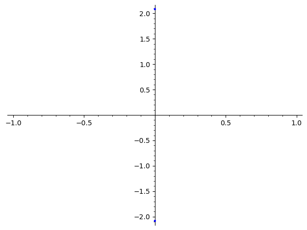

surface_objects#
Geometric objects on surfaces.
This includes singularities, saddle connections and cylinders.
- class flatsurf.geometry.surface_objects.Cylinder(s, label0, edges)[source]#
Represents a cylinder in a SimilaritySurface. A cylinder for these purposes is a topological annulus in a surface bounded by a finite collection of saddle connections meeting at 180 degree angles.
To Do#
Support cylinders whose monodromy is a dilation.
EXAMPLES:
sage: from flatsurf import translation_surfaces sage: s = translation_surfaces.octagon_and_squares() sage: from flatsurf.geometry.surface_objects import Cylinder sage: cyl = Cylinder(s, 0, [2, 3, 3, 3, 2, 0, 1, 3, 2, 0]) sage: cyl.initial_label() 0 sage: cyl.edges() (2, 3, 3, 3, 2, 0, 1, 3, 2, 0) sage: # a = sqrt(2) below. sage: cyl.area() 2*a + 4 sage: cyl.circumference().minpoly() x^4 - 680*x^2 + 400 sage: cyl.holonomy() (8*a + 12, 4*a + 6)
- boundary()[source]#
Return the set of saddle connections in the boundary, oriented so that the surface is on the left.
- boundary_components()[source]#
Return a set of two elements: the set of saddle connections on the right and left sides. Saddle connections are oriented so that the surface is on the left.
- circumference()[source]#
In a cone surface, return the circumference, i.e., the length of a geodesic loop running around the cylinder. Since this may not lie in the field of definition of the surface, it is returned as an element of the Algebraic Real Field.
- edges()[source]#
Return a tuple of edge numbers representing the edges crossed when the cylinder leaves the polygon with initial_label until it returns by closing.
- holonomy()[source]#
In a translation surface, return one of the two holonomy vectors of the cylinder, which differ by a sign.
- next(sc)[source]#
Return the next saddle connection as you move around the cylinder boundary moving from sc in the direction of its orientation.
- plot(**options)[source]#
Plot this cylinder in coordinates used by a graphical surface. This plots this cylinder as a union of subpolygons. Only the intersections with polygons visible in the graphical surface are shown.
Parameters other than graphical_surface are passed to polygon2d which is called to render the polygons.
Parameters#
- graphical_surfacea GraphicalSurface
If not provided or None, the plot method uses the default graphical surface for the surface.
- polygons()[source]#
Return a list of pairs each consisting of a label and a polygon. Each polygon represents a sub-polygon of the polygon on the surface with the given label. The union of these sub-polygons form the cylinder. The subpolygons are listed in cyclic order.
- class flatsurf.geometry.surface_objects.SaddleConnection(surface, start_data, direction, end_data=None, end_direction=None, holonomy=None, end_holonomy=None, check=True, limit=1000)[source]#
Represents a saddle connection on a SimilaritySurface.
- direction()[source]#
Returns a vector parallel to the saddle connection pointing from the start point.
The will be normalized so that its $l_infty$ norm is 1.
- end_data()[source]#
Return the pair (l, v) representing the label and vertex of the corresponding polygon where the saddle connection terminates.
- end_direction()[source]#
Returns a vector parallel to the saddle connection pointing from the end point.
The will be normalized so that its l_infty norm is 1.
- end_holonomy()[source]#
Return the holonomy vector of the saddle connection (measured from the end).
In a SimilaritySurface this notion corresponds to developing the saddle connection into the plane using the initial chart coming from the initial polygon.
- holonomy()[source]#
Return the holonomy vector of the saddle connection (measured from the start).
In a SimilaritySurface this notion corresponds to developing the saddle connection into the plane using the initial chart coming from the initial polygon.
- intersections(traj, count_singularities=False, include_segments=False)[source]#
See documentation of
intersections()
- intersects(traj, count_singularities=False)[source]#
See documentation of
intersects()
- length()[source]#
In a cone surface, return the length of this saddle connection. Since this may not lie in the field of definition of the surface, it is returned as an element of the Algebraic Real Field.
- start_data()[source]#
Return the pair (l, v) representing the label and vertex of the corresponding polygon where the saddle connection originates.
- flatsurf.geometry.surface_objects.Singularity(similarity_surface, label, v, limit=None)[source]#
Return the point of
similarity_surfaceat thev-th vertex of the polygonlabel.If the surface is infinite, the
limitcan be set. In this case the construction of the singularity is successful if the sequence of vertices hit by passing through edges closes up inlimitor less steps.EXAMPLES:
sage: from flatsurf.geometry.similarity_surface_generators import TranslationSurfaceGenerators sage: s=TranslationSurfaceGenerators.veech_2n_gon(5) sage: from flatsurf.geometry.surface_objects import Singularity sage: sing=Singularity(s, 0, 1) doctest:warning ... UserWarning: Singularity() is deprecated and will be removed in a future version of sage-flatsurf. Use surface.point() instead. sage: print(sing) Vertex 1 of polygon 0 sage: TestSuite(sing).run()
- class flatsurf.geometry.surface_objects.SurfacePoint(surface, label, point, ring=None, limit=None)[source]#
A point on
surface.INPUT:
surface– a similarity surfacelabel– a polygon label for the polygon with respect to which thepointcoordinates can be made sense ofpoint– coordinates of a point in the polygonlabelor the index of the vertex of the polygon withlabelring– a SageMath ring orNone(default:None); the coordinate ring forpointlimit– an integer orNone(default:Nonefor an unlimited number of steps); if this is a singularity of the surface, then this limits the number of edges that are crossed to determine all the edges adjacent to that singularity. An error is raised if the limit is insufficient.
EXAMPLES:
sage: from flatsurf import translation_surfaces sage: permutation = SymmetricGroup(2)('(1, 2)') sage: S = translation_surfaces.origami(permutation, permutation)
A point can have a single representation with coordinates when it is in interior of a polygon:
sage: S.point(1, (1/2, 1/2)) Point (1/2, 1/2) of polygon 1
A point can have two representations when it is in interior of an edge:
sage: p = S.point(1, (1/2, 0)) sage: q = S.point(2, (1/2, 1)) sage: p == q True sage: p.coordinates(2) ((1/2, 1),)
A point can have even more representations when it is a vertex:
sage: S.point(1, (0, 0)) Vertex 0 of polygon 1
- contains_vertex(label, v=None)[source]#
Checks if the pair
(label, v)is in the equivalence class returning true or false. IfvisNone, the both the pair(label, v)is passed as a single parameter inlabel.EXAMPLES:
sage: from flatsurf import translation_surfaces sage: permutation = SymmetricGroup(2)('(1, 2)') sage: S = translation_surfaces.origami(permutation, permutation) sage: p = S.point(1, (0, 0)) sage: p.contains_vertex((1, 0)) doctest:warning ... UserWarning: contains_vertex() is deprecated and will be removed in a future version of sage-flatsurf; use the == operator instead doctest:warning ... UserWarning: Singularity() is deprecated and will be removed in a future version of sage-flatsurf. Use surface.point() instead. True sage: p.contains_vertex(label=1, v=0) True
- coordinates(label)[source]#
Return coordinates for the point in the in the polygon
label.EXAMPLES:
sage: from flatsurf import translation_surfaces sage: S = translation_surfaces.mcmullen_L(1, 1, 1, 1) sage: p = S.point(0, (0, 0)) sage: p.coordinates(0) # random output: order depends on the Python version ((0, 0), (1, 0), (0, 1), (1, 1))
- graphical_surface_point(graphical_surface=None)[source]#
Return a
flatsurf.graphical.surface_point.GraphicalSurfacePointto represent this point graphically.EXAMPLES:
sage: from flatsurf import half_translation_surfaces sage: S = half_translation_surfaces.step_billiard([1, 1, 1, 1], [1, 1/2, 1/3, 1/4]) sage: p = S.point(0, (1/2, 1/2)) sage: G = p.graphical_surface_point()
- is_vertex()[source]#
Return whether this point is a singularity of the surface.
EXAMPLES:
sage: from flatsurf import translation_surfaces sage: permutation = SymmetricGroup(2)('(1, 2)') sage: S = translation_surfaces.origami(permutation, permutation) sage: p = S.point(1, (0, 0)) sage: p.is_vertex() True
- labels()[source]#
Return the labels of polygons containing the point.
EXAMPLES:
sage: from flatsurf import translation_surfaces sage: S = translation_surfaces.mcmullen_L(1, 1, 1, 1)
For a point in the interior of polygon, there is exactly one label:
sage: p = S.point(0, (1/2, 1/2)) sage: p.labels() {0}
For a point in the interior of an edge of a polygon, there can be up to two labels:
sage: p = S.point(0, (0, 1/2)) sage: p.labels() {0, 2}
For a point at a vertex, there can be more labels:
sage: p = S.point(0, (0, 0)) sage: p.labels() {0, 1, 2}
- num_coordinates()[source]#
Return the number of different coordinate representations of the point.
EXAMPLES:
sage: from flatsurf import translation_surfaces sage: permutation = SymmetricGroup(2)('(1, 2)') sage: S = translation_surfaces.origami(permutation, permutation) sage: p = S.point(1, (0, 0)) sage: p.num_coordinates() doctest:warning ... UserWarning: num_coordinates() is deprecated and will be removed in a future version of sage-flatsurf; use len(representatives()) instead. 4
- one_vertex()[source]#
Return a pair (l, v) from the equivalence class of this singularity.
EXAMPLES:
sage: from flatsurf import translation_surfaces sage: permutation = SymmetricGroup(2)('(1, 2)') sage: S = translation_surfaces.origami(permutation, permutation) sage: p = S.point(1, (0, 0)) sage: p.one_vertex() # random output: depends on the Python version doctest:warning ... UserWarning: one_vertex() is deprecated and will be removed in a future version of sage-flatsurf; use (label, coordinates) = point.representative(); vertex = surface.polygon(label).get_point_position(coordinates).get_vertex() instead (2, 1)
- plot(*args, **kwargs)[source]#
Return a plot of this point.
EXAMPLES:
sage: from flatsurf import half_translation_surfaces sage: S = half_translation_surfaces.step_billiard([1, 1, 1, 1], [1, 1/2, 1/3, 1/4]) sage: p = S.point(0, (0, 0)) sage: p.plot() ...Graphics object consisting of 1 graphics primitive

sage: p = S.point(0, (0, 25/12)) sage: p.plot() ...Graphics object consisting of 1 graphics primitive

- representative()[source]#
Return a representative of this point, i.e., the first of
representatives().EXAMPLES:
sage: from flatsurf import translation_surfaces sage: permutation = SymmetricGroup(2)('(1, 2)') sage: S = translation_surfaces.origami(permutation, permutation) sage: p = S.point(1, (0, 0)) sage: p.representative() # random output: depends on the Python version (2, (1, 0))
- representatives()[source]#
Return the representatives of this point as pairs of polygon labels and coordinates.
EXAMPLES:
sage: from flatsurf import translation_surfaces sage: permutation = SymmetricGroup(2)('(1, 2)') sage: S = translation_surfaces.origami(permutation, permutation) sage: p = S.point(1, (0, 0)) sage: p.representatives() frozenset({(1, (0, 0)), (1, (1, 1)), (2, (0, 1)), (2, (1, 0))})
- surface()[source]#
Return the surface containing this point.
EXAMPLES:
sage: from flatsurf import translation_surfaces sage: permutation = SymmetricGroup(2)('(1, 2)') sage: S = translation_surfaces.origami(permutation, permutation) sage: p = S.point(1, (1/2, 1/2)) sage: p.surface() is S True
- vertex_set()[source]#
Return the list of pairs (l, v) in the equivalence class of this singularity.
EXAMPLES:
sage: from flatsurf import translation_surfaces sage: permutation = SymmetricGroup(2)('(1, 2)') sage: S = translation_surfaces.origami(permutation, permutation) sage: p = S.point(1, (0, 0)) sage: list(p.vertex_set()) # random output: ordering depends on the Python version doctest:warning ... UserWarning: vertex_set() is deprecated and will be removed in a future version of sage-flatsurf; use representatives() and then vertex = surface.polygon(label).get_point_position(coordinates).get_vertex() instead [(2, 1), (1, 2), (1, 0), (2, 3)]